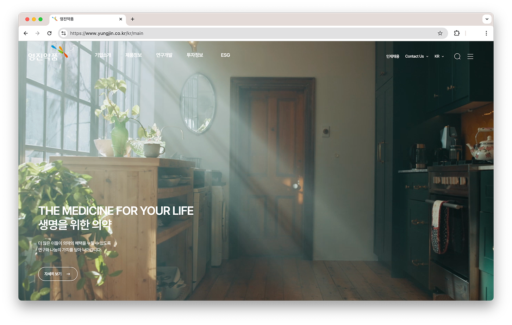

영진약품
2025 - 2026
Overview
영진약품은 의약품 제조 및 판매를 중심으로 다양한 헬스케어 사업을 전개하는 기업입니다.
공통 UI 구조를 정립하고, 관리자 에디터 기반 운영 환경을 고려하여 효율적인 콘텐츠 관리가 가능하도록 리뉴얼되었습니다.
Work Detail
Tech Stack
Tool

리스트 및 UI 컴포넌트 공통화
게시판형, 갤러리형 등 다양한 리스트 형태의 콘텐츠 구조를 고려하여 공통 레이아웃과 UI 컴포넌트를 정의했습니다.
이를 통해 작업 효율을 높이고, 유지보수 시에도 일관된 UI를 유지할 수 있도록 작업했습니다.
관리자 에디터 기반 구조 대응
관리자 에디터로 관리되는 페이지와 정적 페이지를 명확히 구분하여 작업했습니다.
개발 반영 시 콘텐츠 관리가 용이하도록 하고, 운영 환경에서 유연한 수정이 가능하도록 퍼블리싱을 진행했습니다.
이전 프로젝트
현대글로비스 복리후생 안내 플랫폼다음 프로젝트
한국통신사업자연합회(KTOA)